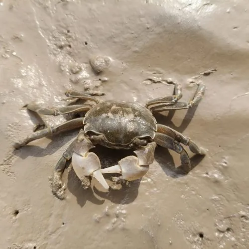

甲壳动物 · 动物界
天津厚蟹 Helice tientsinensis

头胸甲近方形、螯足粗壮的小型蟹类，栖于渤海与黄海沿岸泥滩，掘洞而居，是潮间带常见种。
- 分类
- 门节肢动物门纲软甲纲目十足目科弓蟹科属厚蟹属
- 栖息环境
- 潮间带上部泥滩、河口高盐沼泽与海堤内侧
- 地理分布
- 中国渤海与黄海沿岸（天津、河北、山东等地）
- 保护级别
- 常见种，无保护需求；养殖区视为有害蟹类
物种志
天津厚蟹的头胸甲宽约三至四厘米，近方形而略扁，背甲灰褐至暗绿色，表面有细密颗粒，前缘有锯齿。螯足粗壮而不对称，掌节外侧有一条明显的隆脊。步足侧扁，末对足呈桨状，边缘生有刚毛，适合在软泥上行走和短距离游泳，眼柄细长，退潮时在洞口张望。
它分布于中国渤海和黄海沿岸，尤其天津、河北、山东的河口泥滩数量较多，栖息在潮间带上部的泥滩和高盐沼泽，掘洞而居，洞口常堆着挖出的泥球。它以泥滩上的有机碎屑、藻类和底栖小动物为食，退潮后出洞活动。它是潮间带食物网的重要一环，也是多种水鸟和鱼类的食物，同时会破坏海堤和养殖塘的堤坝，在养殖区被视为有害蟹类。
形态与习性
- 甲宽约三至四厘米，近方形
- 背甲灰褐至暗绿，表面有细颗粒
- 螯足粗壮不对称，掌节外侧有隆脊
- 掘洞洞口常堆泥球，密度高
- 食性有机碎屑、藻类与底栖小动物
- 生态角色水鸟与鱼类的食物，亦破坏堤坝
趣味知识
- 退潮后的泥滩上一片小泥球，那就是它挖洞时一粒粒搬出来的。
- 它把洞挖在海堤和虾塘的堤脚，洞一多堤就容易被水掏空。
- 它是迁徙水鸟的重要口粮，泥滩上密密麻麻的洞口都是它的家。